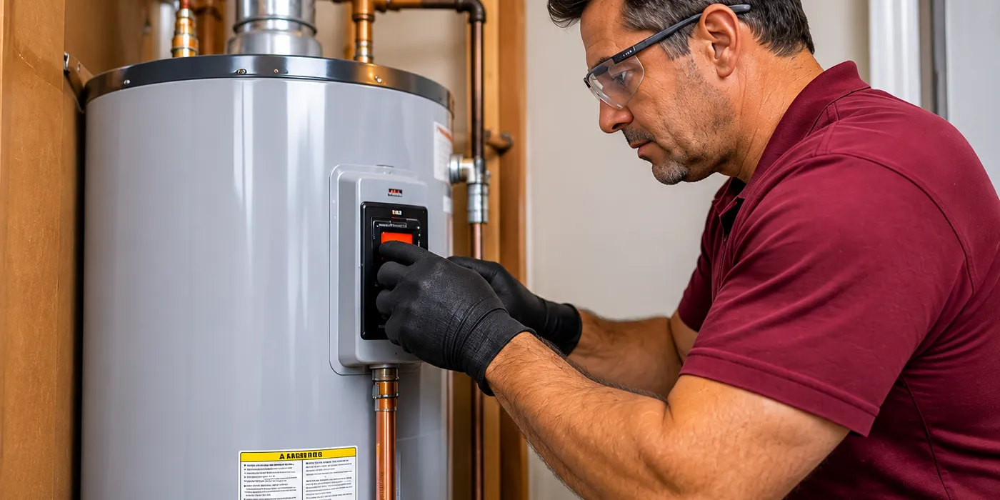

Drain Cleaning in Cedar Park, TX
We clear kitchen, bathroom, and floor drain blockages across Cedar Park.
We hear about a kitchen sink that gurgles after the water shuts off, a shower pan that holds water around the drain, or a floor drain that sends a sewer smell into the room. Those signs often start with grease, soap residue, hair, paper, or sediment collecting in a branch line. We trace the fixture and pipe route before choosing a cable, hand auger, or camera check.
We also look for water rising in a second fixture, because a backed-up tub and toilet can point beyond one trap. A slow bathroom sink may have buildup at the stopper and tailpiece, while a laundry standpipe can overflow because the clog sits farther down the drain line. The location of the backup helps us separate a local blockage from a shared branch or main line restriction.
We treat a drain that stops taking water, sends wastewater into another fixture, or releases a sewer odor as work that should not wait. Wastewater can overflow a sink cabinet, shower pan, or floor drain, and a blockage can pack tighter as more grease and debris reach the pipe. A single slow fixture without an overflow can sometimes wait briefly, but it still needs attention before the line closes completely.
Gurgling sinks and sewer odors
We regularly hear “my sink gurgles,” “the shower will not drain,” “water comes up in the tub,” and “the bathroom smells like sewage.” A kitchen sink that drains only after the disposal stops can have grease in the kitchen branch, while a shower that pools around the strainer often holds hair and soap near the trap. Water appearing in a tub when a toilet flushes can signal a blockage farther along the bathroom line, and a sewer odor can come from a dry trap, loose cleanout cap, or restricted drain. Those symptoms can sound alike over the phone, but the pipe location, blockage type, and work needed can lead to different costs.
Drain callout and camera check
We begin the callout by running water at the affected sink, tub, shower, or floor drain and checking which fixture backs up first. We inspect the stopper, strainer, trap, cleanout, and accessible pipe joints, then note the pipe diameter and the water level left in the basin. A visible trap and fixture check often takes fifteen to thirty minutes; a cable run or camera pass takes longer when the blockage sits beyond the nearby cleanout.
We clear reachable buildup with the appropriate cable and test the drain with repeated water flow before we leave the fixture. We can refit a trap washer or cleanout cap if removal exposes a worn seal, but a damaged underground line, buried cleanout, or pipe section requiring excavation needs a separate booking. We explain what the camera or cable found so the next drain step follows the actual pipe route rather than a guess.
Cleanout access and pipe route
A blockage close to a sink trap or accessible cleanout takes different work than one deep in a branch line behind a wall or beneath a slab. Cabinet shelves, stored items, a tight crawlspace, and a cleanout hidden behind a panel all change the time needed to reach the pipe. A floor drain or exterior cleanout that gives direct cable access usually avoids removing a trap or working through a fixture opening.
Pipe material and the debris inside the line also affect the job. Grease can coat a kitchen drain over a long run, roots can enter older underground joints, and broken pipe can stop a cable from passing through the route. If a camera shows a collapsed section, a buried cleanout, or a drain route that needs excavation or approval, we discuss that separate work before it is scheduled.
Fixture and cleanout location
Before calling, we ask you to note which room has the blocked fixture and whether the kitchen sink, shower, tub, laundry standpipe, or floor drain is involved. We also need to know whether water is standing now, whether another fixture backs up when water runs, and whether a sewer smell comes from the drain opening. If you can see a cleanout cap, tell us whether it sits outside, in a garage, under a sink cabinet, or behind an access panel. Clear the cabinet below the affected sink or the area around the floor drain when possible, since that gives us room for the cable and water test. Call JPT Cedar Park Plumbing at (512) 818-1571 before a partial blockage turns into wastewater overflowing from a sink, tub, or floor drain.
When we are open
Outside these hours, leave a message and we will call back.
Next: water heater repair, or back to the home page.